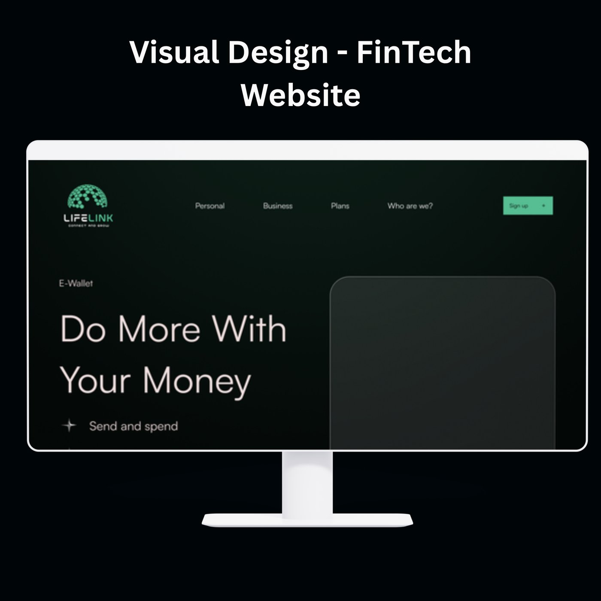
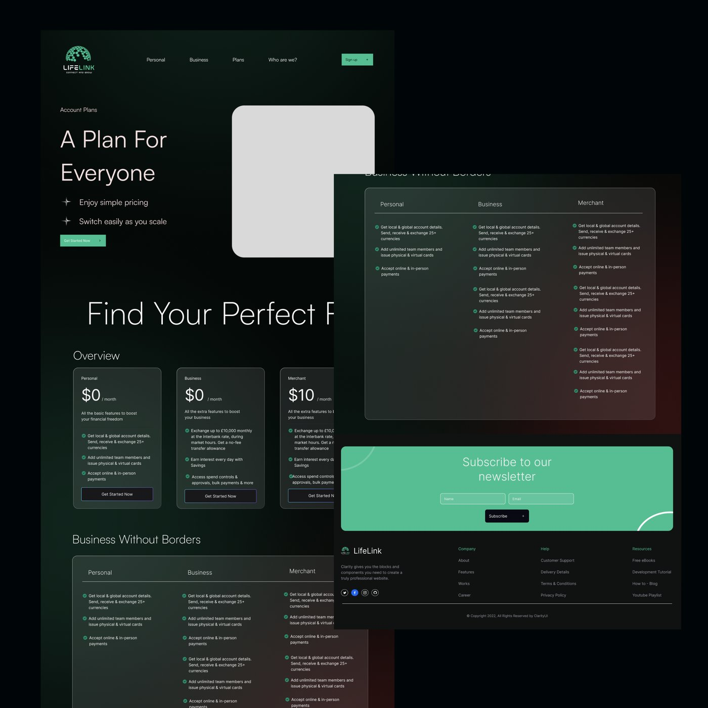
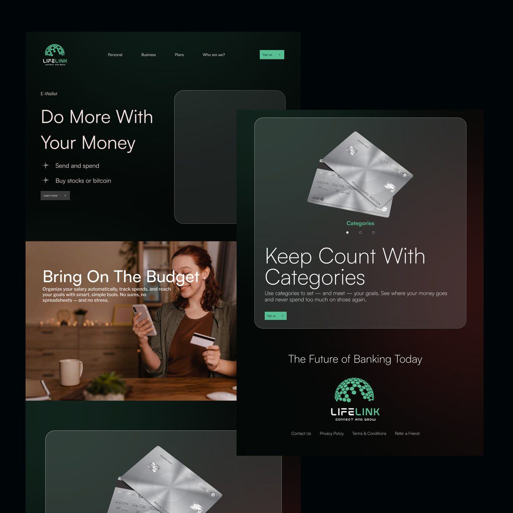

Elevating visual design for a FinTech platform
Banking is a trust business - and trust is visual before it's anything else. Working with a cross-functional team, I elevated the experience and visual design of LifeLink, a digital banking platform, building reusable design-system components and refining layouts for desktop.

The approachA system, not just screens
Rather than styling pages one at a time, the work centered on reusable components - cards, comparison tables, pricing tiers, feature lists, CTAs - each designed once and deployed consistently across the platform. Consistency is what makes an interface feel trustworthy, and in banking, trustworthy is the entire brief.
The visual language pairs a deep green-black palette with a single mint accent and generous, airy type - confident without being loud. Every component was documented for handoff so the system would survive contact with real development.

The detailsWhere clarity earns trust
The pages that matter most in fintech are the ones where users make decisions - plans, fees, comparisons. Those got the most attention: side-by-side product comparisons with scannable rows, honest fee displays, and clear next steps. Payment features, budgeting tools, and category tracking each received layouts that let the content breathe on desktop screens.
